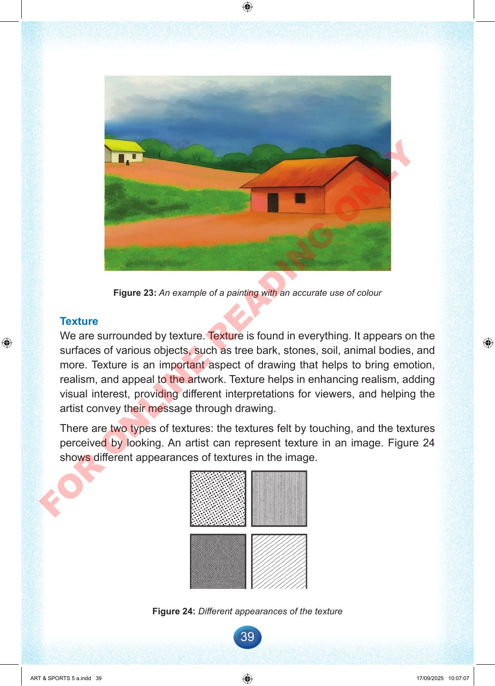

39
Figure
23:
An
example
of
a
painting
with
an
accurate
use
of
colour
Texture
We
are
surrounded
by
texture.
Texture
is
found
in
everything.
It
appears
on
the
surfaces
of
various
objects,
such
as
tree
bark,
stones,
soil,
animal
bodies,
and
more.
Texture
is
an
important
aspect
of
drawing
that
helps
to
bring
emotion,
realism,
and
appeal
to
the
artwork.
Texture
helps
in
enhancing
realism,
adding
visual
interest,
providing
different
interpretations
for
viewers,
and
helping
the
artist
convey
their
message
through
drawing.
There
are
two
types
of
textures:
the
textures
felt
by
touching,
and
the
textures
perceived
by
looking.
An
artist
can
represent
texture
in
an
image.
Figure
24
shows
different
appearances
of
textures
in
the
image.
Figure
24:
Different
appearances
of
the
texture
ART
&
SPORTS
5
a.indd
39
ART
&
SPORTS
5
a.indd
39
17/09/2025
10:07:07
17/09/2025
10:07:07
F
O
R
O
N
L
I
N
E
R
E
A
D
I
N
G
O
N
L
Y